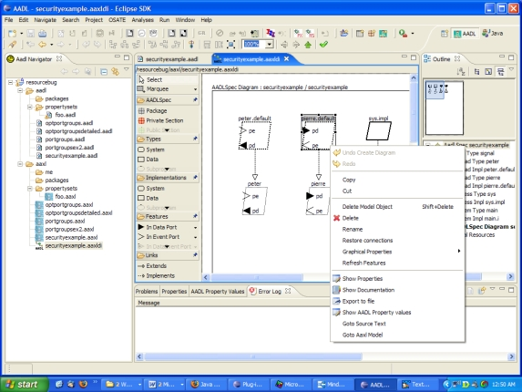

Previous
Next
Previous
Next 
| 8.2 Graphical Editing |
The graphical editor has a palette with all the language constructs that are graphically
supported. New model objects are created by selecting an item on the palette and placing it in
the diagram by placing the mouse at the desired location and clicking once. Implementations
are associated with their component type through the Implements relation. Names of the
model objects can be edited by double clicking on them or by editing them through the
properties view (see below).
In the instance diagram of a component implementation subcomponents and connections can
be added. When a subcomponent is added a dialog box prompts the user to select an existing
classifier or it will automatically create a new component classifier with a user-supplied name.
Ports can be placed into component types, component implementations, and into
subcomponents. In all cases the port is actually created in the component type and shown with
all implementations and subcomponents. If the shown ports are thought out of date a Refresh
Features command in the context menu for the selected component will update the features
being displayed. The default direction of features can be changed by selecting the drop-down
menu on the right of the feature entry in the palette.
The graphical editor also has an outline view that shows an overview of the diagram for quick
viewing of different parts of the diagram and an object model navigator. When selecting a
model object in the model navigator commands that are acceptable for that model object are
available. The user can create objects in the model without adding them to the diagram, and
can invoke analysis actions available through OSATE analysis plug-ins.
The graphical editor also has a context menu in the diagram. When the graphical symbol of a
model object is selected, through the context menu the user can delete the graphical symbol of
a model object in the diagram without deleting the model object, or delete both the graphical
symbol and the model object. The user can also view properties of the selected object, such
as the direction of a port, view and edit AADL Properties associated with the selected model
object (Show AADL Property Values), and navigate to the location of the selected model
object in the AADL text editor (Goto Source Text) or the AADL object editor (Goto Aaxl
Model).
AADL property viewing and editing is done through the OSATE AADL properties viewer and
editor (see section 7.7 for details). This editor allows the user to change and add property
values through context menu commands in the AADL Properties View. When a property is
associated to a model element such as a subcomponent, the user is given the choice of
associating it to the selected component or to its classifier.
The Topcased editor supports a documentation view through which comments on model object
can be added and edited.
| 8.2.1 From the Graphical Editor to the Text Editor |
OSATE/Topcased automatically updates the text file when the user performs a save in the
graphical editor or when the user navigates to the AADL text using the Goto Source Text
command.
